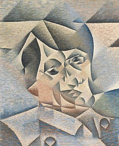

Picasso-esque Facial Memories
by phil on Sunday Jan 27, 2013 6:36 PM

When you re-encounter someone who you've spent a long time away from, their face always seem more compressed than normal. In our imaginations, the facial memory of our loved ones becomes elongated and exploded, as features disappear, and salient ones remain, like ornaments on a Christmas tree. Their real face is tighter and more whole. The first impression from a long time apart, as you see them through the windshield of their car when they pick you up from the airport, is an eerie feeling. Perhaps Picasso was onto something with his depiction of jigsaw faces.